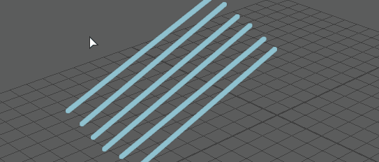

Blue Pencil 工具可用于在场景之上绘制二维草图。使用它能够以干净且非破坏性的方式绘制姿势和移动弧线，以及给作品添加注释。可以创建草图来标记快照，或生成图像的整个序列和播放预览以生成小型手绘影片。
可以在任何透视或正交摄影机中为每帧添加一个 Blue Pencil 草图，但是层上可以有多个帧。您可以 .zip 文件的形式保存和导出草图，方法是在 Blue Pencil 工具栏中使用“导出 Blue Pencil 帧”(Export Blue Pencil Frames)按钮( )
)
在视口中使用 Blue Pencil 进行绘制：
- 通过执行下列操作之一打开 Blue Pencil 工具：
- 单击面板工具栏中的 Blue Pencil 图标
 。
。
- 从“动画”(Animation)菜单集 (F4) 中选择。
- 单击面板工具栏中的 Blue Pencil 图标
- 从 Blue Pencil 工具栏中选择工具，然后在视口中开始绘制。
Blue Pencil 帧会自动显示在时间滑块的当前时间指示器的位置。此帧被视为活动 Blue Pencil 帧。
 提示：
提示：使用 Blue Pencil 的“重影”(Ghost)工具查看最多包含前面或后面十个帧的 Blue Pencil 图形。请参见预览包含重影的 Blue Pencil 帧。
- 若要在另一个时间点处绘制帧，请将时间滑块(Time Slider)上的当前时间指示器移动到新位置，然后单击 Blue Pencil 工具栏上的“添加帧”(Add Frame)图标
 。（如果在不存在 Blue Pencil帧的时间开始绘制，则会创建帧。）
。（如果在不存在 Blue Pencil帧的时间开始绘制，则会创建帧。）
可以按住 Shift 键并拖动以重新组织时间滑块(Time Slider)上 Blue Pencil 帧的顺序。有关详细信息，请参见使用 Blue Pencil 帧。
调整 Blue Pencil 工具属性：

您还可以在 Blue Pencil 工具设置(Blue Pencil Tool Settings)中访问 Blue Pencil 工具属性。
修改 Blue Pencil 图形：
- 在图形上单击鼠标右键，然后从上下文菜单中选择“变换”(Transform)
- 在视口中拖动以选择要更改的区域。
注： 如果进入变换模式，但不选择区域，则 Blue Pencil 会认为整个图像都被选定。
- 选择图形的某个区域后，按 Enter 键进行确认。也可以在选定区域上单击鼠标右键以显示上下文菜单，然后选择“变换”(Transform)。
- 拖动、按住 Shift 键并拖动或使用鼠标中键拖动，以平移、旋转或缩放选定区域。有关如何变换选定区域，请参见下面的修改选定区域。
- 按 Enter 键应用变换，或在图形上单击鼠标右键并选择“应用变换”(Apply Transformation)。
- 按 Esc 键取消，或按 Backspace 键还原变换。

- 可以保存和导出 Blue Pencil 草图，方法是使用 Blue Pencil 工具栏中的“导出 Blue Pencil 帧”(Export Blue Pencil Frames)请参见导入或导出 Blue Pencil 帧。
可以在 Blue Pencil 的“变换”(Transform)模式下编辑 Blue Pencil 图形
有关如何编辑 Blue Pencil 图形的详细信息，请参见使用 Blue Pencil 变换模式修改图形。
- 添加 Blue Pencil 帧
- 打开 Blue Pencil 工具，然后在视口中开始绘制：Blue Pencil 帧会自动显示在时间滑块当前时间指示器的位置。此帧被视为活动 Blue Pencil 帧。
-
- 也可以在 Blue Pencil 工具栏中单击“添加帧”(Add Frame)，或在时间滑块上单击鼠标右键，然后从“动画控件”(Animation Controls)菜单中选择。
有关详细信息，请参见使用 Blue Pencil 帧。
保存和导出 Blue Pencil 草图
使用 Blue Pencil 工具栏 上的“导出 Blue Pencil 帧”(Export Blue Pencil Frames)选项。请参见导入或导出 Blue Pencil 帧。
擦除 Blue Pencil 图形：
- 若要擦除图形的某些部分，请单击 Blue Pencil 工具栏上的“橡皮擦”(Eraser)工具
 。可以在“工具”(Tool)选项中指定橡皮擦的大小。请参见上文的“调整 Blue Pencil 工具属性”(To adjust Blue Pencil Tool attributes)。
注： 每次只能擦除一帧。
。可以在“工具”(Tool)选项中指定橡皮擦的大小。请参见上文的“调整 Blue Pencil 工具属性”(To adjust Blue Pencil Tool attributes)。
注： 每次只能擦除一帧。 - 若要从活动帧中移除所有图形而不将其删除，请单击“清除帧”(Clear Frame)
 。
。
- 若要从时间滑块中移除帧和图形，请单击“删除帧”(Delete Frame)
 。
。
有关详细信息，请参见清理 Blue Pencil 草图。